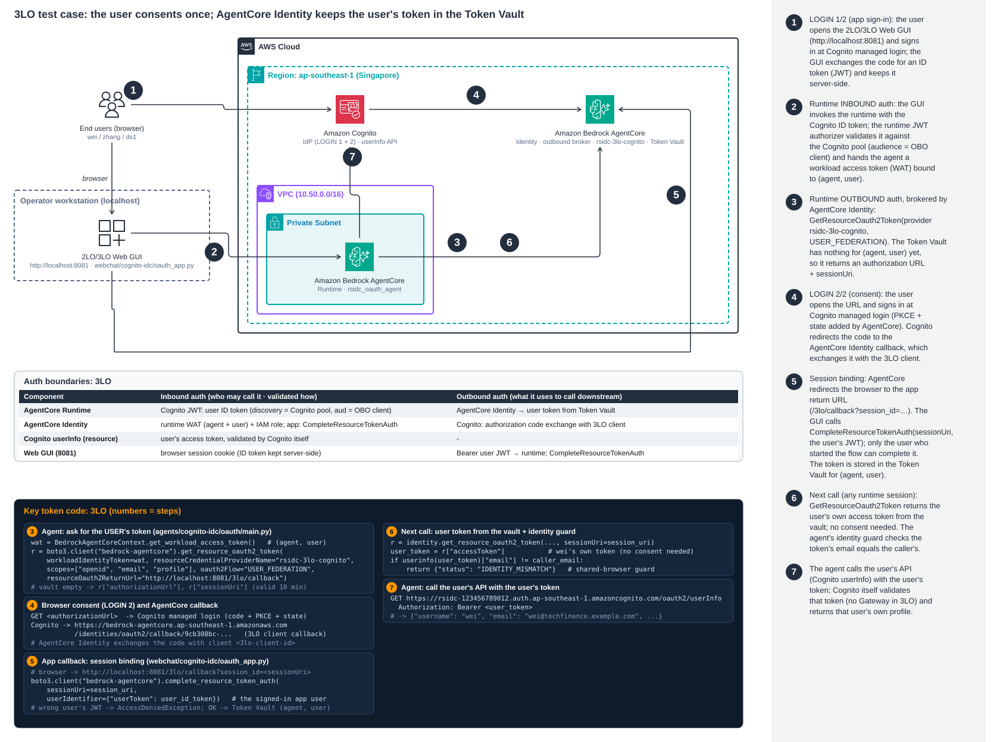

Architecture: agent → AgentCore Identity (Token Vault) → Cognito userInfo
The user consents once at Cognito. AgentCore Identity stores the resulting token in the Token Vault, keyed by (workload identity, user), and the app proves
who the user is with session binding (CompleteResourceTokenAuth). After that the agent reads the vault and calls Cognito /oauth2/userInfo as the user.
The other outbound patterns are compared with OBO on the same Redshift data; the OBO runtime (rsidc_data_agent, version 3) and its tests are not modified, a separate runtime is used.

Open full size · The user consents once (Token Vault), session binding is done by the app. Click the diagram to open it full size.
Animated walkthrough: flow.html (3LO tab).
Where this fits
- Steps 1–8 (network, Cognito pool and users, IAM Identity Center, Redshift, OBO runtime) are the shared foundation: see foundation.html.
- The OAuth runtime
rsidc_oauth_agentis shared with Part 3: see part3-2lo.html. 3LO usesmode: "3lo", 2LO usesmode: "2lo". - OBO (the user's identity reaches Redshift) is in part4-obo.html.
Steps in this part
| # | Step | Result |
|---|---|---|
| 1 | Step 9 · Cognito OAuth clients | rsidc-3lo-agent, code, openid email profile; ManagedLoginVersion 2 |
| 2 | Step 10 · Credential provider rsidc-3lo-cognito | callbackUrl set on the 3LO client |
| 3 | Step 12 · OAuth runtime + return URLs | returnUrls set |
| 4 | Step 13 · 3LO test cases | PASS (3LO cases of 18/18) + 1 OBSERVED |
| 5 | Web GUI · 3LO panel | CompleteResourceTokenAuth OK, identity guard passed |
| 6 | Comparison with OBO | user at the resource's IdP |
| 7 | Findings | 3 findings |
| 8 | Teardown | via 99-teardown.sh |